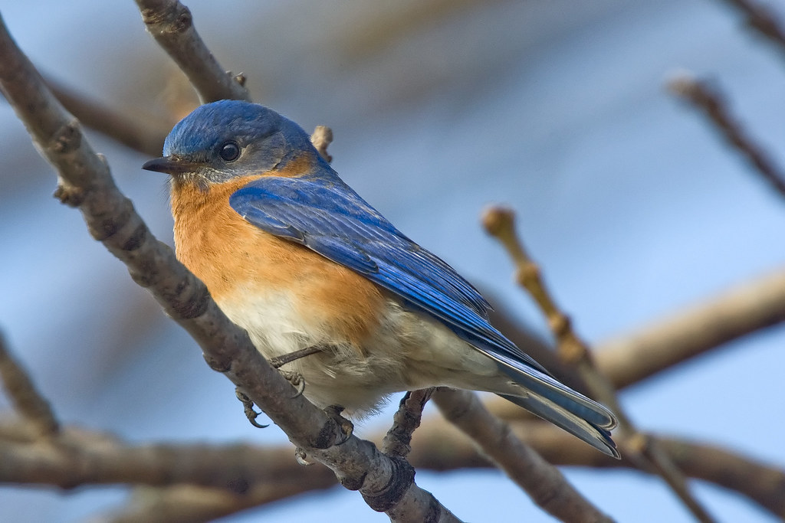

So you’re interested in birding in Missouri? Well, you’ve come to the right place! This site encourages beginners and seasoned birders to explore the great sights and sounds of Missouri. So if you’re in need of a quick run down or a refresher before you head out the door, check out the tips below.
